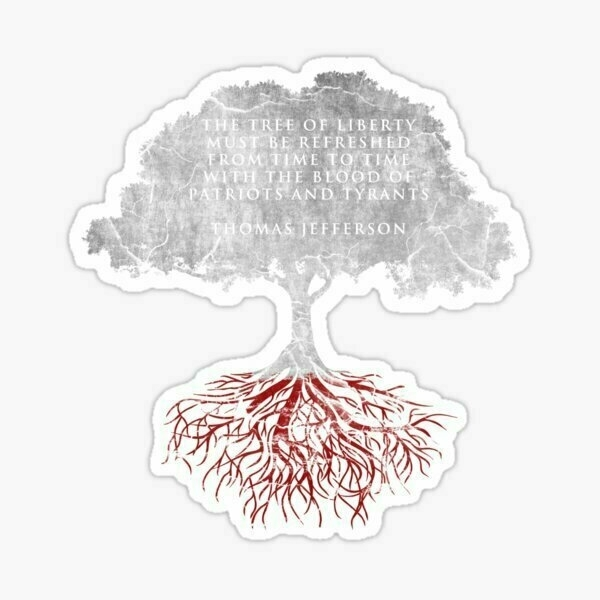
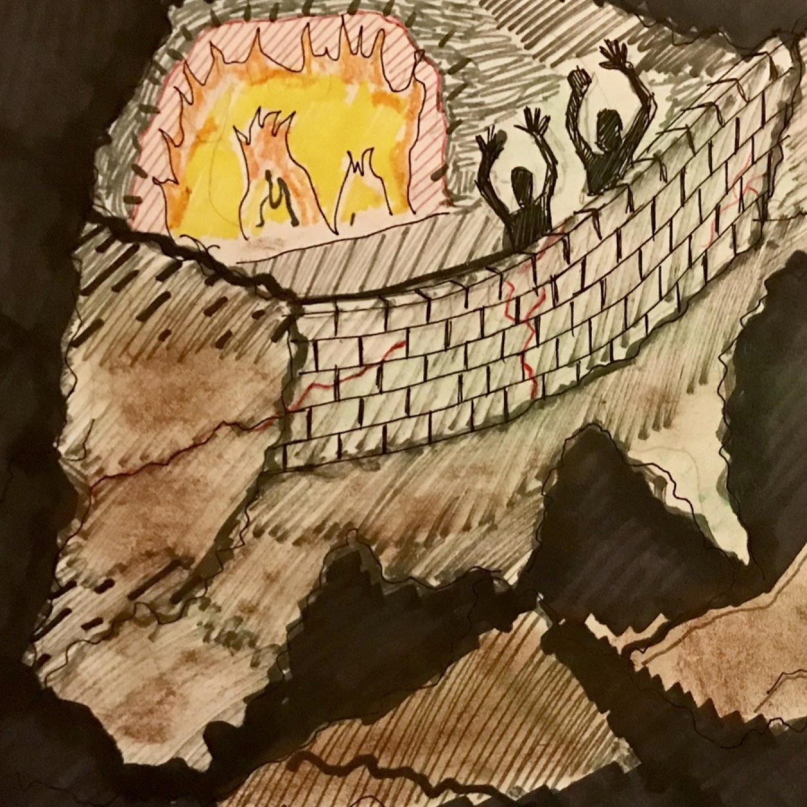

Recognizing Major and Minor Chords
Not sure yet why the frame rate dropped to shit but the major and minor chords coming in over the Audiobus port are being correctly recognized.
Knotting Tools
For those unfamiliar with decorative knotting, the first thing you find yourself doing when starting to get into it is obsessing over your knotting tools. From stitching together a custom tool roll within which to store the tools…


to creating unnecessarily fancy landyards from which to dangle the tools…

to attempting to cover damn near every tool with some kind of Turk’s Head…


Camp Chair Bag
Totally forgot about the bag I made to stick the camping chair inside. Composed primarily of a big a$$ Turk’s Head knot with a plait of some kind serving as the strap.


The Maddow Chord
Anyone wondering with which chord pattern Rachel Maddow was primarily speaking during last night’s broadcast may now consider their curiosity quenched. The chord pattern with which she seems to enjoy projecting her prose would clearly be that of 9♮11(♭13).
 Anyone wondering with which chord pattern Rachel Maddow was primarily speaking during last night’s broadcast may now consider their curiosity quenched. The chord pattern with which she seems to enjoy projecting her prose would clearly be that of 9♮11(♭13).
Anyone wondering with which chord pattern Rachel Maddow was primarily speaking during last night’s broadcast may now consider their curiosity quenched. The chord pattern with which she seems to enjoy projecting her prose would clearly be that of 9♮11(♭13).Some spectrum visualizations and top five most likely candidate lists for a couple of the neural network projections.


The log entries for the above outputs with a bit more specificity.

And, as we can see from our projection history, there really weren’t any other chordial contenders.

Perpetual Groove
While looking through old photos I came across these assets for an application I did a while ago. I thought it might be fun to write a guide on how one might go about throwing a whole lot of work at something and never actually finish it. The name I gave this application was Perpetual Groove, and the first thing on the agenda is to go nuts creating an icon for it.

Next, ponder the scale of your project. It should clearly be bigger than any one person should consider. Maintaining your application should not be a consideration.

Now, waste a shit ton of time on icons. I mean … don’t worry that all that detail is undetectable at application scale.

Once the basics have been established, we can begin adding complicated and unnecessary functionality such as MIDI file import and export capability, a transport complete with jog dial, and full editing capabilities.

And if you are parsing MIDI files … just build the parser yourself. Hex code is fun, right?

Definitely support both portrait and landscape. So necessary.

Go f$&king bonkers on the notes while working out the geometry.


And be sure to get extra fancy when considering animations.


Like, wouldn’t it be cool if the horizontal scrolling felt three dimensional? Make that sh$t happen.


Did I already mention the notes?


Okay, good. Moving on. Now that your application is practically out the f$&king door, this is the perfect time to relocate. This will give you 2-4 weeks away from the project entirely. The goal here, of course, is to lose track of all that unnecessary complexity you have thrown into your application.

But let’s stick with the previous screenshot. Did anybody notice the appearance of still more icons in the editor? You never want to stop injecting unnecessary complexity into your application

Once relocated and finished unpacking, revisit your application. Notice how all that complexity leaves you with no real feel for where you were or how to jump back in. The perfect time to start a new project, am I right?

And if anyone takes an interest in this guide, I will make another for Chord Finder. The complexity only goes up folks. We are talking signal processing, neural networks, low level graphics, Swift frameworks that are themselves wrappers for C++ frameworks, etc., etc.
Where Meaning Goes
Where meaning goes to die
Where smiles lie
Where mild manners pander to appease
An obfuscated aura
Hides well malignancy
A spirit merely spoken of
Fills not with love
But with hot air and emptiness
A vagabond of vacancy
A spirit lived distends
To hold the breadth of life
In this place it is all talk
Walk and talk
Walk and talk
The efficacy with which
Emptiness fills space astounds
Pestilence personified
A hallowed face and hollow heart
Think not that perceptive clarity
Belies similitude
If ever I had meaning
It has died
Could I purse my lips to smile
It would lie
My spirit quivers
With complacency
But, are not my manners mild?

Song in C
The better version of a song I found from 2008 that abruptly cuts out with 40 seconds remaining (which I trimmed out) but the whole thing is generic so nothing missed really
16 Bar Chord Progression
A 16 bar chord progression that I came up with for testing the neural network I trained to recognize musical chords. For some reason I like the way it resolves when looped.
Remote Tray
With a fancy new pipe stand to use, the drawer organizer I had sliced into a remote control tray was looking brutish …

So I made a new one out of Wenge and Bloodwood


Pipe
A look at the electronic pipe I made for vaping nicotine

Start with one fully functioning electronic pipe:

Create your own wooden shell for holding the electronics of the perfectly good pipe you plan on destroying:

Transfer the innards, a little light soldering, some protective clear coating, and voila:


Dugan's Collar
A look at my finest decorative knotting achievement, a collar I made for Dugan. The bulk of the collar is a double-edge plait. I invented knots to form each of the bear shapes. I then held my nose and stitched the bears to the braid.


The dancing bears I used as reference


On Ending Minority Rule
Minority rule over WE THE PEOPLE comes to an end in 2021. Everyone strap the f$&k in. Everyone mask the f$&k up. We’ve got a long way to go and a short time to get there. But goddammit, this Grady Hospital baby can f$&king feel it in his bones.
This is the moment. This is the mother… f$&king… moment. The moment when the momentum shifts, when the forming of a more perfect union, a true multicultural democracy for the land of the free, becomes measurably closer to inevitable than it is to unfathomable.
I need this. I mean I f$&king NEED this. My home state, the state that made me, the state of Georgia, needs this. Our entire country needs this. The whole… f$&king… world… NEEDS… THIS! So let’s get to work. Let’s make it happen.


On Political Analysis
Any postgame analysis must account for the current ecosystem by which we download information in this nation. The one which bifurcated our society into two distinct bubbles. I could just as easily have gone with echo chambers, analogically speaking, but there is something mesmeric about bubbles that better suits my mood. So let’s have a closer look at what lies within these bewitching bubbles.
Let’s consider the first bubble. Here you’ll find such familiar factions as all-of-the-f$&king-left and the NeverTrumpers. With these two resident groups, bubble one is unique in housing a complete representation of our nation’s traditional two party system. This, predictably, generates much discord; however, you’ll find all bubble one denizens united behind a globule cause: the restoration of observable reality as a basis for civil discourse.
Let’s move to the second bubble. Here you’ll also find some familiar factions like the GOP and the KKK. To fully comprehend the complexity of bubble two denizens; however, we must familarize ourselves with some relatively new additions. Are you a white nationalist eagerly awaiting the commencement of your race war, fearing that an evolving American demography might minoritize you? Then perhaps you are already acquainted with the Proud Bois. Pizzagate got you down? Perhaps Q is not new to you. As with bubble one, we may tease out a characteristic universally applicable to bubble two denizens: the uncanny ability to house diometrically opposing viewpoints within their skulls. Tragically, this trait leaves bubble two residents tremendously susceptible to both propaganda and cult phenomena.
Let’s consider what the two bubbles have in common. Within each of these bubbles something magical happens. An entire reality blossoms within each bubble. An existence so colorfully complete that bubble residents begin to believe that their bubble must hold all of existence. Spend enough time within a bubble’s confines and any memory of a greater reality, of a world outside of the bubble, fades away like the colors of a weathered “these colors don’t run” bumpersticker.
If we conduct a direct comparison between the two bubble realities, you’ll notice that they diverge in some fascinating ways. Take the first bubble. Within this bubble it is a widely held belief that our norms and our precedents alone can protect our democracy. Naive, I know, but bless their hearts. Bubble two, in contrast, believes these same norms and precedents to be the insidious tools used by agents of the deep state as they work towards democracy’s deconstruction. And check this out. In the second bubble … and seriously you won’t want to believe me but I promise you this is true … in this second bubble millions … yes millions … of people find it totally plausible for their to be a shadowy, high power cabal drinking up babies in pursuit of immortality. Suffice it to say that among the myriad of bubble one denizen concerns you’ll not find any mention of baby drinking.
Now ask yourself why such disparities between bubble realities? Cult phenomena can be tricky so don’t feel bad if you can’t think of the answer. I can’t think of it myself. What greater implications might we find concerning the bifurcation of our information ecosystem? How would those implications affect political messaging? What does this bifurcation mean for mainstream media? Is “mainstream” still an appropriate moniker for applying to the media outlets we intend to reference?
What does the ecology of dualing reality information ecosystems mean for political analysis? Don’t worry if you don’t know this either. I sure as sh$t don’t. But I expect it’s consideration would be integral. Full disclosure, I am admittedly biased … for I am obsessed with this information ecosystem quandary … as the frequency with which I pass out the following will attest:
Dualing reality information ecosystems, worldview rigidity, and the power of propaganda may be considered the root problem from which we have birthed every crisis we now face. Solving it is prerequisite for progress … perhaps even prerequisite for halting our devolution.
— Moondeer (@kelleydawg) November 18, 2020
On Accountability
Everyone keeps acting like Trump is a f$&king mob boss controlling those around him. F$&k that sh$t … he is the bullsh$t babbling baboon puffed up like an orange balloon that we all clearly see him to be. Trump is the f$&king tool. His enablers built the propaganda machine for peddling this cult of personality as a means for safeguarding their minority rule over our nation.
I am not quite sure how we are meant to judge psychopathy where accountability is concerned, I can’t quite put my finger on a true psychopath’s capacity for comprehension. I have no such knowledge gaps when it comes to non-psychopaths utilizing weaponized psychopathy to achieve a stranglehold on power … willingly committing treason to protect that which they have gained.
The constitution had an answer for Trump. Enablers … such as Lindsey Graham … publicly parted ways with any pretense of public service … liquidated their constitutional oathes when the Senate chamber was recast as a kangaroo court. They chose subversion.
When COVID broke like a rogue wave across this nation … they once again saw an opportunity to embrace the contemptible whilst scrambling to shore up their dwindling authority. These enablers sought to utilize the disruptive chaos produced by a plagued nation to amplify their efforts at disenfranchisement.
How pleased must they have been upon learning that the virus was disproportionately killing more brown and black Americans than it was killing white Americans. The virus … itself … became a tool. Those we speak of as minorities in this nation … those who when we add them together shall soon become a majority … they were the ones in the eye of the storm.
What perhaps began as a political stance born of stupidity or stubbornness or something else entirely … had blossomed into fresh opportunity … an opportunity for our elderly white ruling class to roll back the color-to-white ratio of our populace … herd immunity very quickly became the official federal COVID response … tapping Atlas simply emboldened them to tell us so.
Lindsey Graham, Mitch McConnell, Bill Barr, every GD GOP senator, every f$&king GOP member that has openly embraced these actions … or whose solidarity is shown through silence … these are the responsible parties. These are the people for which we must ensure accountability.
These are the vampiric vultures whose feathers we shall pluck … for WE THE PEOPLE must protect what we hold precious from such men and women … and make examples of them for future generations … examples we shall include in our lesson plans when teaching our children’s children the history of this nation’s Tree of Liberty.

On Tipping Points
What I thought was a tipping point for movements of equality, I have come to recognize as a tipping point for minority rule over this nation.
Our demography has shifted past that point which triggers the old white regime to brazenly subvert American democracy in one last ditch effort at clinging to the power it has held for so many centuries.
This is not sustainable. Our nation must be safeguarded against minority rule.
The shape of this effort, of the magnitude of this challenge, and the inevitability of a positive outcome … all such shapes remain obscured as the shadows of too many moving parts mingle and mate like shadow dancers projected upon the wall of Plato’s cave.

On Sparking Dumpster Fires
The general consensus across the Twittersphere with regard to Trump supporters goes like this: they are morons … Hillary was correct to call them deplorables … these are the dregs of our society.
Whole lotta truth here. The problem falling by the wayside for a myriad of reasons is that the percentage of people for which this provides an accurate description and the percentage of people that fall under the label “Trump supporter” are divergent.
What we must understand … and work to eliminate … is the why. For some f$&king reason … too many f$&king people are squaring their perceived reality with an acceptance that our societal dregs have blossomed into 49% of our populace. I am still not sure how they are squaring the ease with which millions in this nation have found it totally f$&king plausible for there to be a shadowy, high power cabal drinking up babies in pursuit of immortality.
The degradation of journalistic credibility, the rise of outright like-you-learned-it-in-school propaganda being fed to our nation like news (but let off the hook as entertainment), the degree to which social media has supplanted traditional news in our information ecosystem, the bifurcation of our information ecosystem into two unbridgeable dualing reality echo chambers … these things are what one needs to spark the dumpster fire within which we find ourselves.
I can count on two hands the number of people I have come across with appreciation for this. The hand count drops to one when we refine our set to include people who realize that this ecosystem must be deconstructed should we hope to regain the ground we have lost … to perhaps progress further than we have previously been. Those within reach must be deprogrammed. Those unreachable must be drowned out.
I haven’t yet found a single soul interested in helping me work out how this might be achieved. How we might merge our echo chambers so that we might once again share a collective voice. There must be a return to civil discourse or the fabric of our society shall unravel past the point of patching. We must all inhabit a common reality should we ever hope to find common ground. The rage is properly placed but progress would require more of us … and … at the very least … it will certainly require we understand how the fire started.

A Sorted Affair
A sorted affair, like the little girl’s hair
A libation on information
When you can trust nothing you’ll believe anything
Conscious or conscientious? Which? Either?
Break like summer sun through cloudy sky
Or milky puss through broken sty
Wary should we be
That our eyes don’t paint the leaves
Here there be monsters
The likes of which I’ve never seen
Shimmy up and down the stalk
So I may tell you what you’ve seen
We breathe, we breed, we need to explain
Awake we frighten fosterlings
Adjudicate accessibility
Drown out objectivity
Bleating axioms angrily
To taint with torpid movement the last of man’s humanity
The earthworm eats the shit we leave and
Gives it back for us to seed
Who ingests our karmic waste
The kids may play like a snow day
Constructing existential effigies
But, the fires won’t go out and now
It’s getting difficult to breathe

An Empty Pocket Sailor
An empty pocket sailor
Drifting along the currents of cohabitation
Tattered sails hang hidden
To all save crying eyes
Alone from earth to sky
An inverted intentation
Wearing a strapless soul and
Paper boots with starving roots
Howling silence at the satellite city
Lupine speech with a laudable lisp
Transient taste
And aches to be kissed
Crumbling mortar means weakening walls
Within his house of cards
The Jack of Clubs can’t hold long
Without the Queen of Hearts
Solitary confinement
Rooted by stars with iron bars
The fear of growing barren
Has him sticking love in jars

Dream of Dreams
Let us embark upon a midnight dream
Of post-war metaphysical strength
A gap in the trodden mind
That bequeaths relief from time
A witness to the quickness with which
Father trunk can shake his leaves
With cankered flesh and molten minds
A barren branch of rotted pine
Like a faulty-bearing prisoner
we die
Imprisoned by our own existence
And liberated only by our dreams
A pigeon on the tightrope
Trying to fly with ingrown wings
Surpassing but a baby’s whim
A meager keg of cream
Nothing is scared from within our loans
Nothing sacred in our voice
Dream your dreams
And dream of dreaming dreams

Intrepid Dreams
Infallible peasants, armed and obese
Neither a factor for growing the seed
Trite and trivial, stringing their toes
Relics for abstinence, fools in the flow
Eden or Amityville, time tells all truth
Prior to fortification they prosed
Inside through blood streams, vitamins screamed
David, the layman, led marches, formed teams
During the squabbles the rejects ran dry
Reaching for speech to follow and chide
Eminent soldiers showed little breath
Aging anxiety creates fear of death
Merely a tool to tame the faint hearted
So are the religions these old laymen started

Sleep
Sleep, she lies in fairy tales for me
Creates gaps in Stalin’s misty dream
Of barring leaves from trees
To court the gaps in veins
That leave a sullen pilot light,
A spark like twilight,
To shine for me

The Lines in Your Face
The lines are wired
The breeze is felt like velvet eruptions
Finally, a break in the patterns of light
And a ghost in the reflection
You find out that your death and your face have connections
The lines in your face seem to glow from the misological soap
As the summer comes
And the weeds and the grass elope

Punctuality
Something ties this face together
Olive oil turns leaves to feathers
Christ runs worldly crime and hate
Inside this field with iron gates
Even after teething abates and
Tithing prostrates a rise in weight
Your false words have fallen short and late